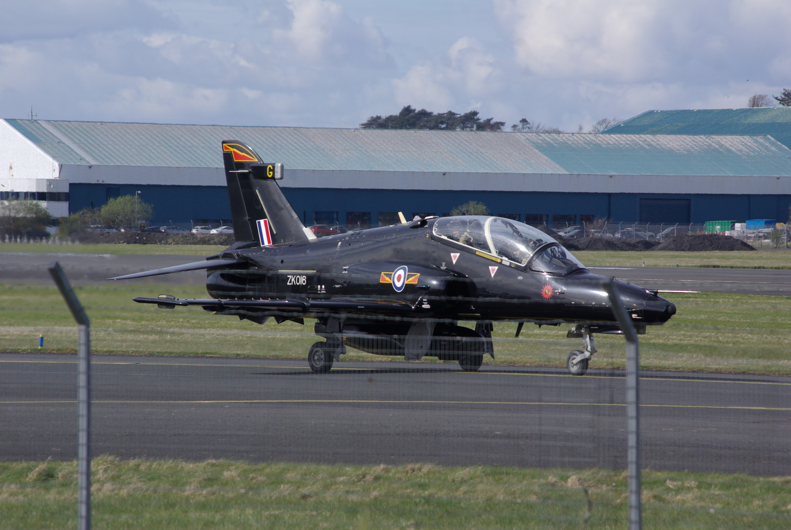

Home

A Royal Air Force Hawk T2 at Prestwick Airport in Scotland - Image Credit: Lee Gallagher
Hello, and welcome to Aviation Dictionary.
I've created this website in order to showcase my great interest in the subject of aviation, and I'm hoping its something that I can add to over time. It'll be an ongoing project as I am currently a Level 6 NC Computer Science student at Ayrshire College in Kilwinning, Scotland. I hope to one day have a career as a web or software developer, as I love the process of programming and developing things that people hopefully find interesting and useful.
In this website, I'll be covering many topics in the subject of aviation that I have a strong interest in, such as:
- The History of Aviation - from the first flights to the modern day
- Light Aircraft - gliders, microlights, light aircraft and amateur-built aircraft types
- Commercial Aviation - airliners, helicopters and cargo aircraft
- Military Aviation - fighter jets, bombers and attack aircraft, spyplanes and more
- Gallery - an image gallery of some of my best photos taken during plane-spotting
I hope this will serve as an interesting exercise in being able to build something I'm interested in and add to (for example, I'll be aiming to use my own photos wherever possible) as well as a demonstration of my basic web development skills using HTML5, CSS3 and vanilla JavaScript.
So jump in, have a look around (once I've gotten round to adding the other pages) and hopefully learn a thing or two about planes!